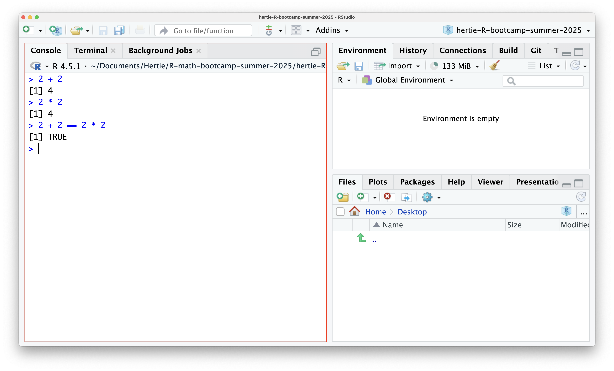
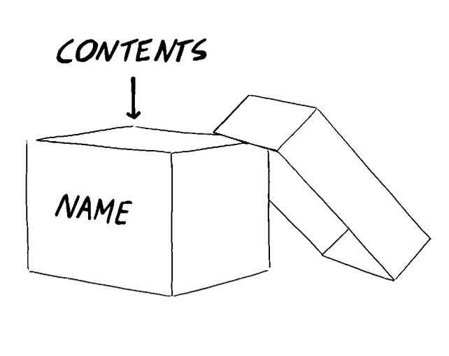
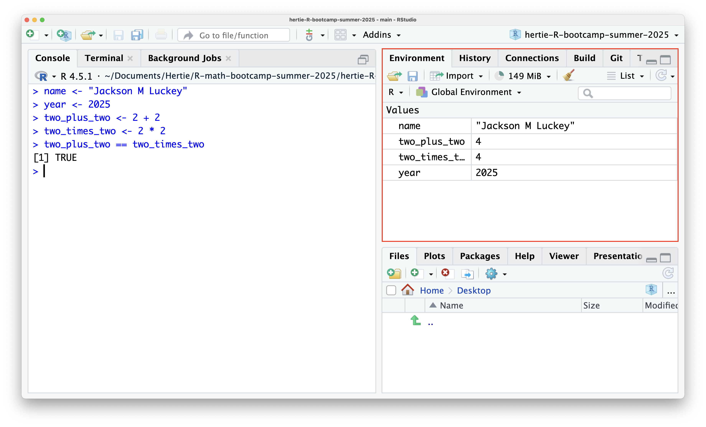
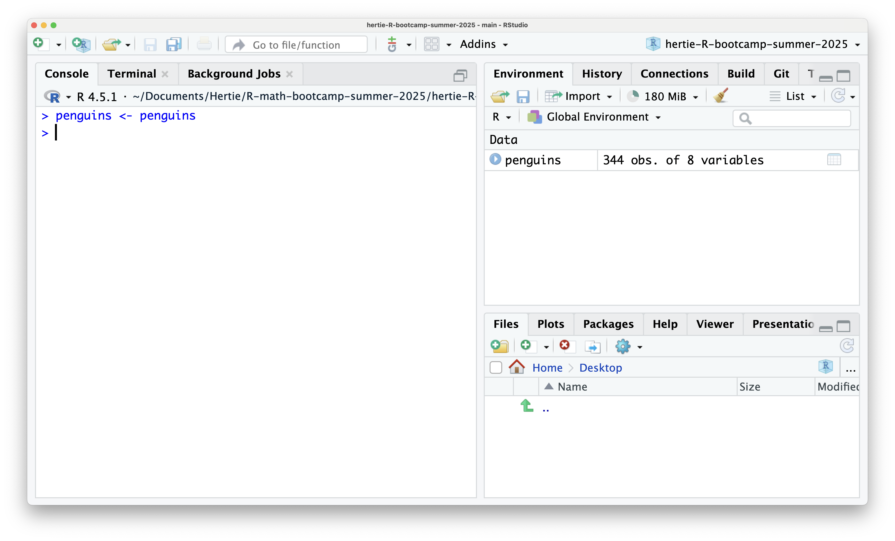
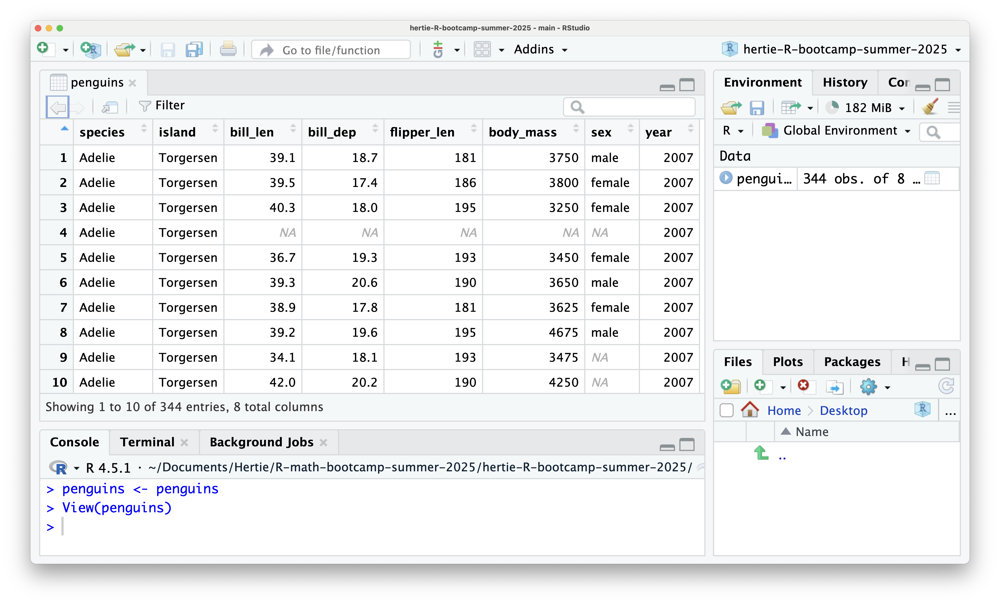

[1] 8760Introduction to R and RStudio
Jackson M Luckey
Using R as a Calculator
The Console in RStudio
The red box is the console where you can freely run R code. I included a few examples of using R + RStudio as a calculator. == means equal to.
R Operators
R includes many operators, including
Arithmetic
+: Addition-: Subtraction*: Multiplication/: Division^: Exponentiation
Relational
==: Equal to!=: Not equal to<: Less than>: Greater than<=: Less than or equal to>=: Greater than or equal to
Logical
&: AND|: OR!: NOT
Exercises
- Calculate the number of hours in a year.
- Calculate the population density of Berlin (Let’s say 3897145 persons in 891.3 \(km^2\))
Solution
Objects
What is an object in R?
An object in R is a named container that stores data, results, or functions.
You can think of an object as a box with a name.
Image Source: Data Analysis for Social Science by Elena Llaudet and Kosuke Imai
How to create an object
Objects are assigned to names using the assignment operator <-. For example
We can then use these objects:
The Environment Pane in RStudio
.
Exercise
Using objects, calculate the population density of Berlin (3897145 persons in 891.3 \(km^2\)) along the lines of
Solution
What kinds of objects are there?
Objects can represent different things, like text (“character”), numbers (“numeric”), and functions (“function”). Throughout the bootcamp and the upcoming semester you’ll learn about many other kinds of objects.
Vectors
Vectors are objects that represent an ordered collection of information. You can create a vector using c() as shown below
Vectors
You can also combine vectors using c() like
north_american_cities <- c("Mexico City", "New York City", "San Francisco", "Vancouver")
south_american_cities <- c("Rio de Janeiro", "Lima", "Buenos Aires", "Medellin")
american_cities <- c(north_american_cities, south_american_cities)
american_cities[1] "Mexico City" "New York City" "San Francisco" "Vancouver"
[5] "Rio de Janeiro" "Lima" "Buenos Aires" "Medellin" Vectors are always one dimensional.
Vectors
You can manipulate vectors just like individual numbers. For example, we can get the number of seconds since 1970 (a common way of storing dates/time in computers) with
Exercise
Calculate the population density of Berlin for every year represented in berlin_pop.
Solution
Indexing Vectors
You can access elements inside a vector using []. For example, to get the first element in cities (“Berlin”), do
In R, counting and indexing start from 1, unlike many other programming languages like Python.
Exercise
Get the population of Berlin in 2020 from berlin_pop.
Solution
Functions
Functions are another kind of object in R. Many functions take objects as arguments and return an object. For example, c() is a function.
Other simple and common functions that work on vectors include:
length(): Returns the number of elements inside an object.min(): Returns the smallest value in an object.max(): Returns the largest value in an object.sum(): Returns the sum of all elements in an object.mean(): Returns the average (mean) of all elements in an object.
Functions
For example, we can find the average population of Berlin between 1980 and 2020 by either doing
or
Exercise
Using min() and max(), find the lowest and highest population density in Berlin between 1980 and 2020.
Solution
Dataframes
Dataframes
Dataframes are objects that have columns (conventionally variables) and rows (conventionally observations). Think of a spreadsheet like Excel or Google Sheets.
R has several dataframes, including penguins, built in. We can load penguins into R with
and view the dataframe with
Loading Penguins
penguins <- penguins loads the penguin dataset into R, so it appears in the environment pane.
Viewing Penguins
View(penguins) opens a new pane that shows the penguins dataset.
Dataframe Columns as Vectors
Dataframe columns can be accessed as vectors using [[]], $, or [,] (the leading comma tells R you are selecting columns and not rows–dataframes use [row,column]).
With [[]] and [,], you need to quote the column name. You do not need to with $, although you can.
Dataframe Columns as Vectors
For example, we can get the penguin species column with
and the unique penguin species with
Exercises
- How many islands are represented in the dataset?
- What are the earliest and latest years represented in the dataset?
Solutions
[[]] vs []

Source: R for Data Science
[[]] vs []
In order words, [[]] always returns a vector and can therefore only be used on a single column. [,] returns a vector if a single column is selected and a dataframe if multiple columns are selected.
You can subset columns with a vector and [,] like
species island year
1 Adelie Torgersen 2007
2 Adelie Torgersen 2007
3 Adelie Torgersen 2007
4 Adelie Torgersen 2007
5 Adelie Torgersen 2007
6 Adelie Torgersen 2007
7 Adelie Torgersen 2007
8 Adelie Torgersen 2007
9 Adelie Torgersen 2007
10 Adelie Torgersen 2007
11 Adelie Torgersen 2007
12 Adelie Torgersen 2007
13 Adelie Torgersen 2007
14 Adelie Torgersen 2007
15 Adelie Torgersen 2007
16 Adelie Torgersen 2007
17 Adelie Torgersen 2007
18 Adelie Torgersen 2007
19 Adelie Torgersen 2007
20 Adelie Torgersen 2007
21 Adelie Biscoe 2007
22 Adelie Biscoe 2007
23 Adelie Biscoe 2007
24 Adelie Biscoe 2007
25 Adelie Biscoe 2007
26 Adelie Biscoe 2007
27 Adelie Biscoe 2007
28 Adelie Biscoe 2007
29 Adelie Biscoe 2007
30 Adelie Biscoe 2007
31 Adelie Dream 2007
32 Adelie Dream 2007
33 Adelie Dream 2007
34 Adelie Dream 2007
35 Adelie Dream 2007
36 Adelie Dream 2007
37 Adelie Dream 2007
38 Adelie Dream 2007
39 Adelie Dream 2007
40 Adelie Dream 2007
41 Adelie Dream 2007
42 Adelie Dream 2007
43 Adelie Dream 2007
44 Adelie Dream 2007
45 Adelie Dream 2007
46 Adelie Dream 2007
47 Adelie Dream 2007
48 Adelie Dream 2007
49 Adelie Dream 2007
50 Adelie Dream 2007
51 Adelie Biscoe 2008
52 Adelie Biscoe 2008
53 Adelie Biscoe 2008
54 Adelie Biscoe 2008
55 Adelie Biscoe 2008
56 Adelie Biscoe 2008
57 Adelie Biscoe 2008
58 Adelie Biscoe 2008
59 Adelie Biscoe 2008
60 Adelie Biscoe 2008
61 Adelie Biscoe 2008
62 Adelie Biscoe 2008
63 Adelie Biscoe 2008
64 Adelie Biscoe 2008
65 Adelie Biscoe 2008
66 Adelie Biscoe 2008
67 Adelie Biscoe 2008
68 Adelie Biscoe 2008
69 Adelie Torgersen 2008
70 Adelie Torgersen 2008
71 Adelie Torgersen 2008
72 Adelie Torgersen 2008
73 Adelie Torgersen 2008
74 Adelie Torgersen 2008
75 Adelie Torgersen 2008
76 Adelie Torgersen 2008
77 Adelie Torgersen 2008
78 Adelie Torgersen 2008
79 Adelie Torgersen 2008
80 Adelie Torgersen 2008
81 Adelie Torgersen 2008
82 Adelie Torgersen 2008
83 Adelie Torgersen 2008
84 Adelie Torgersen 2008
85 Adelie Dream 2008
86 Adelie Dream 2008
87 Adelie Dream 2008
88 Adelie Dream 2008
89 Adelie Dream 2008
90 Adelie Dream 2008
91 Adelie Dream 2008
92 Adelie Dream 2008
93 Adelie Dream 2008
94 Adelie Dream 2008
95 Adelie Dream 2008
96 Adelie Dream 2008
97 Adelie Dream 2008
98 Adelie Dream 2008
99 Adelie Dream 2008
100 Adelie Dream 2008
101 Adelie Biscoe 2009
102 Adelie Biscoe 2009
103 Adelie Biscoe 2009
104 Adelie Biscoe 2009
105 Adelie Biscoe 2009
106 Adelie Biscoe 2009
107 Adelie Biscoe 2009
108 Adelie Biscoe 2009
109 Adelie Biscoe 2009
110 Adelie Biscoe 2009
111 Adelie Biscoe 2009
112 Adelie Biscoe 2009
113 Adelie Biscoe 2009
114 Adelie Biscoe 2009
115 Adelie Biscoe 2009
116 Adelie Biscoe 2009
117 Adelie Torgersen 2009
118 Adelie Torgersen 2009
119 Adelie Torgersen 2009
120 Adelie Torgersen 2009
121 Adelie Torgersen 2009
122 Adelie Torgersen 2009
123 Adelie Torgersen 2009
124 Adelie Torgersen 2009
125 Adelie Torgersen 2009
126 Adelie Torgersen 2009
127 Adelie Torgersen 2009
128 Adelie Torgersen 2009
129 Adelie Torgersen 2009
130 Adelie Torgersen 2009
131 Adelie Torgersen 2009
132 Adelie Torgersen 2009
133 Adelie Dream 2009
134 Adelie Dream 2009
135 Adelie Dream 2009
136 Adelie Dream 2009
137 Adelie Dream 2009
138 Adelie Dream 2009
139 Adelie Dream 2009
140 Adelie Dream 2009
141 Adelie Dream 2009
142 Adelie Dream 2009
143 Adelie Dream 2009
144 Adelie Dream 2009
145 Adelie Dream 2009
146 Adelie Dream 2009
147 Adelie Dream 2009
148 Adelie Dream 2009
149 Adelie Dream 2009
150 Adelie Dream 2009
151 Adelie Dream 2009
152 Adelie Dream 2009
153 Gentoo Biscoe 2007
154 Gentoo Biscoe 2007
155 Gentoo Biscoe 2007
156 Gentoo Biscoe 2007
157 Gentoo Biscoe 2007
158 Gentoo Biscoe 2007
159 Gentoo Biscoe 2007
160 Gentoo Biscoe 2007
161 Gentoo Biscoe 2007
162 Gentoo Biscoe 2007
163 Gentoo Biscoe 2007
164 Gentoo Biscoe 2007
165 Gentoo Biscoe 2007
166 Gentoo Biscoe 2007
167 Gentoo Biscoe 2007
168 Gentoo Biscoe 2007
169 Gentoo Biscoe 2007
170 Gentoo Biscoe 2007
171 Gentoo Biscoe 2007
172 Gentoo Biscoe 2007
173 Gentoo Biscoe 2007
174 Gentoo Biscoe 2007
175 Gentoo Biscoe 2007
176 Gentoo Biscoe 2007
177 Gentoo Biscoe 2007
178 Gentoo Biscoe 2007
179 Gentoo Biscoe 2007
180 Gentoo Biscoe 2007
181 Gentoo Biscoe 2007
182 Gentoo Biscoe 2007
183 Gentoo Biscoe 2007
184 Gentoo Biscoe 2007
185 Gentoo Biscoe 2007
186 Gentoo Biscoe 2007
187 Gentoo Biscoe 2008
188 Gentoo Biscoe 2008
189 Gentoo Biscoe 2008
190 Gentoo Biscoe 2008
191 Gentoo Biscoe 2008
192 Gentoo Biscoe 2008
193 Gentoo Biscoe 2008
194 Gentoo Biscoe 2008
195 Gentoo Biscoe 2008
196 Gentoo Biscoe 2008
197 Gentoo Biscoe 2008
198 Gentoo Biscoe 2008
199 Gentoo Biscoe 2008
200 Gentoo Biscoe 2008
201 Gentoo Biscoe 2008
202 Gentoo Biscoe 2008
203 Gentoo Biscoe 2008
204 Gentoo Biscoe 2008
205 Gentoo Biscoe 2008
206 Gentoo Biscoe 2008
207 Gentoo Biscoe 2008
208 Gentoo Biscoe 2008
209 Gentoo Biscoe 2008
210 Gentoo Biscoe 2008
211 Gentoo Biscoe 2008
212 Gentoo Biscoe 2008
213 Gentoo Biscoe 2008
214 Gentoo Biscoe 2008
215 Gentoo Biscoe 2008
216 Gentoo Biscoe 2008
217 Gentoo Biscoe 2008
218 Gentoo Biscoe 2008
219 Gentoo Biscoe 2008
220 Gentoo Biscoe 2008
221 Gentoo Biscoe 2008
222 Gentoo Biscoe 2008
223 Gentoo Biscoe 2008
224 Gentoo Biscoe 2008
225 Gentoo Biscoe 2008
226 Gentoo Biscoe 2008
227 Gentoo Biscoe 2008
228 Gentoo Biscoe 2008
229 Gentoo Biscoe 2008
230 Gentoo Biscoe 2008
231 Gentoo Biscoe 2008
232 Gentoo Biscoe 2008
233 Gentoo Biscoe 2009
234 Gentoo Biscoe 2009
235 Gentoo Biscoe 2009
236 Gentoo Biscoe 2009
237 Gentoo Biscoe 2009
238 Gentoo Biscoe 2009
239 Gentoo Biscoe 2009
240 Gentoo Biscoe 2009
241 Gentoo Biscoe 2009
242 Gentoo Biscoe 2009
243 Gentoo Biscoe 2009
244 Gentoo Biscoe 2009
245 Gentoo Biscoe 2009
246 Gentoo Biscoe 2009
247 Gentoo Biscoe 2009
248 Gentoo Biscoe 2009
249 Gentoo Biscoe 2009
250 Gentoo Biscoe 2009
251 Gentoo Biscoe 2009
252 Gentoo Biscoe 2009
253 Gentoo Biscoe 2009
254 Gentoo Biscoe 2009
255 Gentoo Biscoe 2009
256 Gentoo Biscoe 2009
257 Gentoo Biscoe 2009
258 Gentoo Biscoe 2009
259 Gentoo Biscoe 2009
260 Gentoo Biscoe 2009
261 Gentoo Biscoe 2009
262 Gentoo Biscoe 2009
263 Gentoo Biscoe 2009
264 Gentoo Biscoe 2009
265 Gentoo Biscoe 2009
266 Gentoo Biscoe 2009
267 Gentoo Biscoe 2009
268 Gentoo Biscoe 2009
269 Gentoo Biscoe 2009
270 Gentoo Biscoe 2009
271 Gentoo Biscoe 2009
272 Gentoo Biscoe 2009
273 Gentoo Biscoe 2009
274 Gentoo Biscoe 2009
275 Gentoo Biscoe 2009
276 Gentoo Biscoe 2009
277 Chinstrap Dream 2007
278 Chinstrap Dream 2007
279 Chinstrap Dream 2007
280 Chinstrap Dream 2007
281 Chinstrap Dream 2007
282 Chinstrap Dream 2007
283 Chinstrap Dream 2007
284 Chinstrap Dream 2007
285 Chinstrap Dream 2007
286 Chinstrap Dream 2007
287 Chinstrap Dream 2007
288 Chinstrap Dream 2007
289 Chinstrap Dream 2007
290 Chinstrap Dream 2007
291 Chinstrap Dream 2007
292 Chinstrap Dream 2007
293 Chinstrap Dream 2007
294 Chinstrap Dream 2007
295 Chinstrap Dream 2007
296 Chinstrap Dream 2007
297 Chinstrap Dream 2007
298 Chinstrap Dream 2007
299 Chinstrap Dream 2007
300 Chinstrap Dream 2007
301 Chinstrap Dream 2007
302 Chinstrap Dream 2007
303 Chinstrap Dream 2008
304 Chinstrap Dream 2008
305 Chinstrap Dream 2008
306 Chinstrap Dream 2008
307 Chinstrap Dream 2008
308 Chinstrap Dream 2008
309 Chinstrap Dream 2008
310 Chinstrap Dream 2008
311 Chinstrap Dream 2008
312 Chinstrap Dream 2008
313 Chinstrap Dream 2008
314 Chinstrap Dream 2008
315 Chinstrap Dream 2008
316 Chinstrap Dream 2008
317 Chinstrap Dream 2008
318 Chinstrap Dream 2008
319 Chinstrap Dream 2008
320 Chinstrap Dream 2008
321 Chinstrap Dream 2009
322 Chinstrap Dream 2009
323 Chinstrap Dream 2009
324 Chinstrap Dream 2009
325 Chinstrap Dream 2009
326 Chinstrap Dream 2009
327 Chinstrap Dream 2009
328 Chinstrap Dream 2009
329 Chinstrap Dream 2009
330 Chinstrap Dream 2009
331 Chinstrap Dream 2009
332 Chinstrap Dream 2009
333 Chinstrap Dream 2009
334 Chinstrap Dream 2009
335 Chinstrap Dream 2009
336 Chinstrap Dream 2009
337 Chinstrap Dream 2009
338 Chinstrap Dream 2009
339 Chinstrap Dream 2009
340 Chinstrap Dream 2009
341 Chinstrap Dream 2009
342 Chinstrap Dream 2009
343 Chinstrap Dream 2009
344 Chinstrap Dream 2009Creating New Columns with Vector Operations
You can also create new columns using [[]] or $ or [,]
Exercise
Calculate the ratio between the penguin’s body mass and its flipper length (grams per mm). Assign it to a new column named “grams_per_mm” (or something better).
Solution
Subsetting Dataframes with Vectors
You can also subset dataframes with vectors. For example, let’s say we’re only interested in Adelie penguins on Dream Island.
We can first get a vector that identifies which rows match these conditions with
adelie_on_dream_island <- (penguins[["species"]] == "Adelie") & (penguins[["island"]] == "Dream")
penguins[adelie_on_dream_island,] species island bill_len bill_dep flipper_len body_mass sex year
31 Adelie Dream 39.5 16.7 178 3250 female 2007
32 Adelie Dream 37.2 18.1 178 3900 male 2007
33 Adelie Dream 39.5 17.8 188 3300 female 2007
34 Adelie Dream 40.9 18.9 184 3900 male 2007
35 Adelie Dream 36.4 17.0 195 3325 female 2007
36 Adelie Dream 39.2 21.1 196 4150 male 2007
37 Adelie Dream 38.8 20.0 190 3950 male 2007
38 Adelie Dream 42.2 18.5 180 3550 female 2007
39 Adelie Dream 37.6 19.3 181 3300 female 2007
40 Adelie Dream 39.8 19.1 184 4650 male 2007
41 Adelie Dream 36.5 18.0 182 3150 female 2007
42 Adelie Dream 40.8 18.4 195 3900 male 2007
43 Adelie Dream 36.0 18.5 186 3100 female 2007
44 Adelie Dream 44.1 19.7 196 4400 male 2007
45 Adelie Dream 37.0 16.9 185 3000 female 2007
46 Adelie Dream 39.6 18.8 190 4600 male 2007
47 Adelie Dream 41.1 19.0 182 3425 male 2007
48 Adelie Dream 37.5 18.9 179 2975 <NA> 2007
49 Adelie Dream 36.0 17.9 190 3450 female 2007
50 Adelie Dream 42.3 21.2 191 4150 male 2007
85 Adelie Dream 37.3 17.8 191 3350 female 2008
86 Adelie Dream 41.3 20.3 194 3550 male 2008
87 Adelie Dream 36.3 19.5 190 3800 male 2008
88 Adelie Dream 36.9 18.6 189 3500 female 2008
89 Adelie Dream 38.3 19.2 189 3950 male 2008
90 Adelie Dream 38.9 18.8 190 3600 female 2008
91 Adelie Dream 35.7 18.0 202 3550 female 2008
92 Adelie Dream 41.1 18.1 205 4300 male 2008
93 Adelie Dream 34.0 17.1 185 3400 female 2008
94 Adelie Dream 39.6 18.1 186 4450 male 2008
95 Adelie Dream 36.2 17.3 187 3300 female 2008
96 Adelie Dream 40.8 18.9 208 4300 male 2008
97 Adelie Dream 38.1 18.6 190 3700 female 2008
98 Adelie Dream 40.3 18.5 196 4350 male 2008
99 Adelie Dream 33.1 16.1 178 2900 female 2008
100 Adelie Dream 43.2 18.5 192 4100 male 2008
133 Adelie Dream 36.8 18.5 193 3500 female 2009
134 Adelie Dream 37.5 18.5 199 4475 male 2009
135 Adelie Dream 38.1 17.6 187 3425 female 2009
136 Adelie Dream 41.1 17.5 190 3900 male 2009
137 Adelie Dream 35.6 17.5 191 3175 female 2009
138 Adelie Dream 40.2 20.1 200 3975 male 2009
139 Adelie Dream 37.0 16.5 185 3400 female 2009
140 Adelie Dream 39.7 17.9 193 4250 male 2009
141 Adelie Dream 40.2 17.1 193 3400 female 2009
142 Adelie Dream 40.6 17.2 187 3475 male 2009
143 Adelie Dream 32.1 15.5 188 3050 female 2009
144 Adelie Dream 40.7 17.0 190 3725 male 2009
145 Adelie Dream 37.3 16.8 192 3000 female 2009
146 Adelie Dream 39.0 18.7 185 3650 male 2009
147 Adelie Dream 39.2 18.6 190 4250 male 2009
148 Adelie Dream 36.6 18.4 184 3475 female 2009
149 Adelie Dream 36.0 17.8 195 3450 female 2009
150 Adelie Dream 37.8 18.1 193 3750 male 2009
151 Adelie Dream 36.0 17.1 187 3700 female 2009
152 Adelie Dream 41.5 18.5 201 4000 male 2009
body_mass_kg grams_per_mm
31 3.250 18.25843
32 3.900 21.91011
33 3.300 17.55319
34 3.900 21.19565
35 3.325 17.05128
36 4.150 21.17347
37 3.950 20.78947
38 3.550 19.72222
39 3.300 18.23204
40 4.650 25.27174
41 3.150 17.30769
42 3.900 20.00000
43 3.100 16.66667
44 4.400 22.44898
45 3.000 16.21622
46 4.600 24.21053
47 3.425 18.81868
48 2.975 16.62011
49 3.450 18.15789
50 4.150 21.72775
85 3.350 17.53927
86 3.550 18.29897
87 3.800 20.00000
88 3.500 18.51852
89 3.950 20.89947
90 3.600 18.94737
91 3.550 17.57426
92 4.300 20.97561
93 3.400 18.37838
94 4.450 23.92473
95 3.300 17.64706
96 4.300 20.67308
97 3.700 19.47368
98 4.350 22.19388
99 2.900 16.29213
100 4.100 21.35417
133 3.500 18.13472
134 4.475 22.48744
135 3.425 18.31551
136 3.900 20.52632
137 3.175 16.62304
138 3.975 19.87500
139 3.400 18.37838
140 4.250 22.02073
141 3.400 17.61658
142 3.475 18.58289
143 3.050 16.22340
144 3.725 19.60526
145 3.000 15.62500
146 3.650 19.72973
147 4.250 22.36842
148 3.475 18.88587
149 3.450 17.69231
150 3.750 19.43005
151 3.700 19.78610
152 4.000 19.90050In this case the comma goes last because we are selecting rows and not columns.
Exercise
Subset to penguins with a body mass of 4kg or greater found on Dream Island.
Solution
species island bill_len bill_dep flipper_len body_mass sex year
36 Adelie Dream 39.2 21.1 196 4150 male 2007
40 Adelie Dream 39.8 19.1 184 4650 male 2007
44 Adelie Dream 44.1 19.7 196 4400 male 2007
46 Adelie Dream 39.6 18.8 190 4600 male 2007
50 Adelie Dream 42.3 21.2 191 4150 male 2007
92 Adelie Dream 41.1 18.1 205 4300 male 2008
94 Adelie Dream 39.6 18.1 186 4450 male 2008
96 Adelie Dream 40.8 18.9 208 4300 male 2008
98 Adelie Dream 40.3 18.5 196 4350 male 2008
100 Adelie Dream 43.2 18.5 192 4100 male 2008
134 Adelie Dream 37.5 18.5 199 4475 male 2009
140 Adelie Dream 39.7 17.9 193 4250 male 2009
147 Adelie Dream 39.2 18.6 190 4250 male 2009
152 Adelie Dream 41.5 18.5 201 4000 male 2009
285 Chinstrap Dream 46.0 18.9 195 4150 female 2007
290 Chinstrap Dream 52.0 18.1 201 4050 male 2007
292 Chinstrap Dream 50.5 19.6 201 4050 male 2007
296 Chinstrap Dream 49.2 18.2 195 4400 male 2007
302 Chinstrap Dream 52.0 19.0 197 4150 male 2007
306 Chinstrap Dream 52.8 20.0 205 4550 male 2008
308 Chinstrap Dream 54.2 20.8 201 4300 male 2008
310 Chinstrap Dream 51.0 18.8 203 4100 male 2008
314 Chinstrap Dream 52.0 20.7 210 4800 male 2008
316 Chinstrap Dream 53.5 19.9 205 4500 male 2008
322 Chinstrap Dream 50.8 18.5 201 4450 male 2009
324 Chinstrap Dream 49.0 19.6 212 4300 male 2009
330 Chinstrap Dream 50.7 19.7 203 4050 male 2009
334 Chinstrap Dream 49.3 19.9 203 4050 male 2009
340 Chinstrap Dream 55.8 19.8 207 4000 male 2009
343 Chinstrap Dream 50.8 19.0 210 4100 male 2009
body_mass_kg grams_per_mm
36 4.150 21.17347
40 4.650 25.27174
44 4.400 22.44898
46 4.600 24.21053
50 4.150 21.72775
92 4.300 20.97561
94 4.450 23.92473
96 4.300 20.67308
98 4.350 22.19388
100 4.100 21.35417
134 4.475 22.48744
140 4.250 22.02073
147 4.250 22.36842
152 4.000 19.90050
285 4.150 21.28205
290 4.050 20.14925
292 4.050 20.14925
296 4.400 22.56410
302 4.150 21.06599
306 4.550 22.19512
308 4.300 21.39303
310 4.100 20.19704
314 4.800 22.85714
316 4.500 21.95122
322 4.450 22.13930
324 4.300 20.28302
330 4.050 19.95074
334 4.050 19.95074
340 4.000 19.32367
343 4.100 19.52381